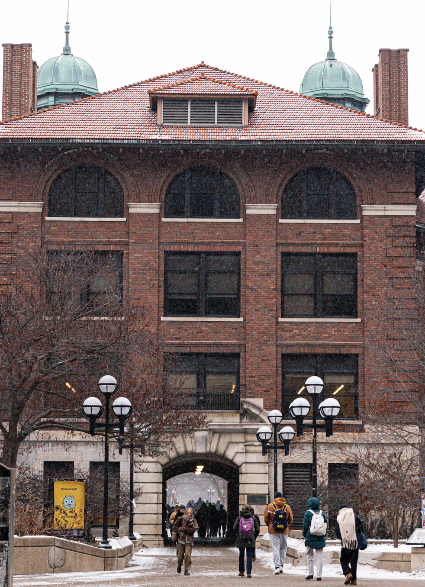
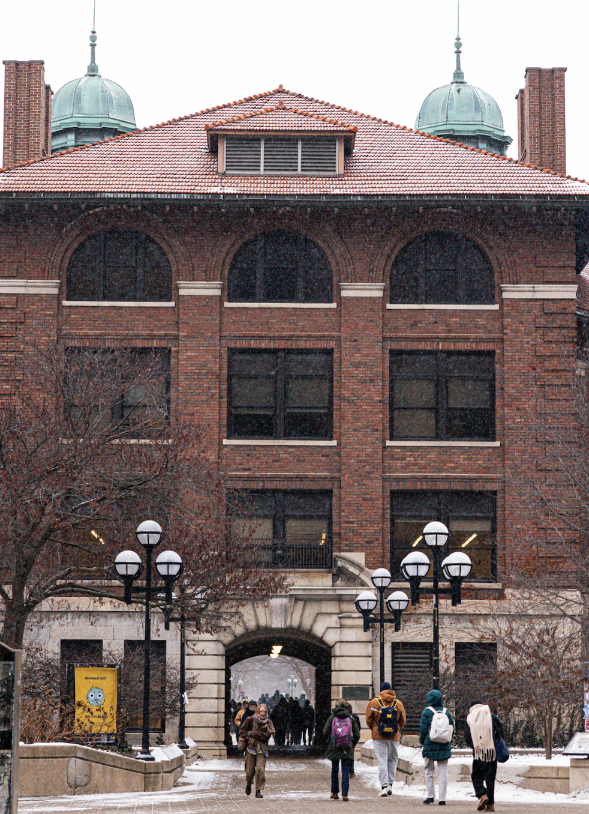

About the Academic Success Team
The Academic Success Team at UMSI is dedicated to supporting students inside and outside of the classroom.
The main purpose of this website is to help students connect with other students and support resources. Information about resources is provided, including courses:
UMSI Programming Peer Tutoring
- SI 106 Programs, Information, and People
- SI 206 Data-Oriented Programming
- SI 506 Programming 1
- SI 507 Intermediate Programming
- General Python support
UMSI Math Peer Tutoring
- Linear algebra
- Statistics
- General Math-related course support
- SIADS 502 Math Methods 1
Peer-to-Peer Tutor Directory
UMSI Students serve as private tutors for SI courses and related content areas. Use the link to see those who are interested in becoming one.
Gallery
 

Book Appointments
UMSI Programming Peer Tutoring List
- Tamariah Davis
- SI 106 and SI 206 Specific Support
- Book an appointment
- Prem Ganesan
- SI 106, SI 206, SI 301, SI 506, SI 507 & General Programming
- Book an appointment
- Akash Dewan
- SI 106, SI 206, SI 330, SI 305, SI 370, SI 506, SI 507 & General Programming
- Book an appointment
- Ayush Shah
- SI 106, SI 206, SI 330, SI 506, SI 507 & General Programming
- Book an appointment
UMSI Math Peer Tutoring List
- Emily Mcclear
- Statistics, Linear Algebra, Calculus & Number Theory
- Book an appointment
Contact umsi.academicssuccess@umich.edu for further questions about anything